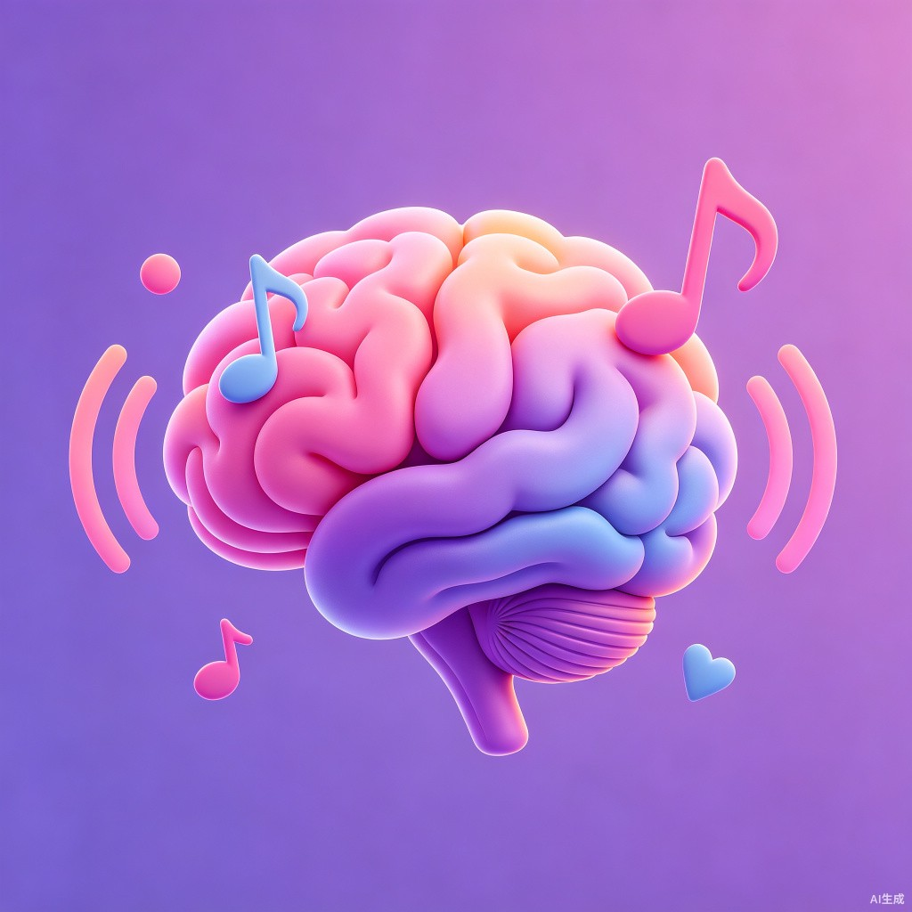

MemoTune

旋律记忆，过耳不忘
用音乐的力量，让知识主动找到你
今日复习
查看全部 >
出门带钥匙
洗脑模板 · 已复习 3 次

英语单词 Unit 5
歌曲改编 · 已复习 1 次
场景提醒
管理 >
玄关 · 出门提醒
绑定 1 首旋律

书桌 · 学习提醒
绑定 2 首旋律

旋律记忆，过耳不忘
用音乐的力量，让知识主动找到你
出门带钥匙
洗脑模板 · 已复习 3 次
英语单词 Unit 5
歌曲改编 · 已复习 1 次
玄关 · 出门提醒
绑定 1 首旋律
书桌 · 学习提醒
绑定 2 首旋律
出门带钥匙
洗脑模板
输入你要记住的内容，AI 自动生成押韵歌词和洗脑旋律
输入你要记忆的内容...

出门带钥匙
洗脑模板 · 0:32 · 已复习 3 次
英语单词 Unit 5
歌曲改编 · 2:15 · 已复习 1 次
历史朝代歌
自由生成 · 1:48 · 已复习 5 次
每天晚八点吃药
洗脑模板 · 0:28 · 已复习 7 次
洗脑模板
MemoTune · 洗脑模板
出门之前回头看一眼
钥匙手机钱包别忘带
旋律循环洗脑记
轻松记住不再烦
出门提醒
学习提醒
添加新场景
拍照或选择位置创建场景提醒
音乐记忆达人
已创作 12 首记忆旋律
28 天连续
连续记忆
86 首
总复习次数
95%
记忆留存率
记忆管理
内容管理
系统
AI 正在创作旋律...
将「出门带钥匙」转化为洗脑记忆口诀
预计还需 15 秒

改编自：蜜雪冰城主题曲
一价氢氯钾钠银，
二价氧钙钡镁锌，
三铝四硅五价磷，
二三铁、二四碳，
二四六硫都齐全，
铜汞二价最常见，
单质零价永不变。
共 7 句 · 预计记忆时长 2 分钟
MemoTune · 蜜雪冰城主题曲旋律